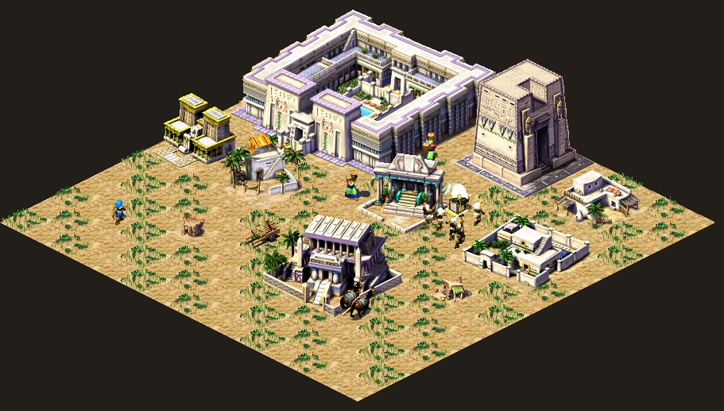
Код, который рисует юнитов и тайлы в стратегиях конца девяностых выполнялся сотни раз за кадр, потому что был достаточно дешевый аппаратный блиттинг, но все еще был недостаточно дешев по памяти и трогал почти каждый пиксель, который игрок видел на экране. Это наверное не так важно если разрешение могло быть 640×480, как минимум на таком мониторе я первые разы играл в Фараона, и для такого кода важнее всего было уже не изящество архитектуры, а размещение данных в памяти, хотя пожалуй кому как не этим первопроходцам рассуждать об красоте архитектуры в отдельно взятых 16 мегабайтах.
Игры всегда были прежде всего картинкой, чтобы не утверждали маркетологи, а хорошая картинка в древнеегипетской стратегии означает тысячи спрайтов: дома, жители, анимации по восьми направлениям, храмы, двенадцать армий врагов и монументы. Монументы так и вовсе рисовались отдельным проходом, потому что были большие и не во всякий экран влазили.
В Pharaoh на диске лежит около 302 мегабайт одной только графики, а если вы распарсите ini‑файл игры, то увидите там параметр RAM, по умолчанию выставленный в 15, столько примерно было на средней машине в то время. А еще был отдельный режим «мало памяти» для машин меньше 16 мегабайт, если у вас стояли скромные 14 мегабайт оперативки (как у меня), где игра принудительно переходила на 640×480 и упрощала цикл симуляции города.
Стандартные средства того времени плохо подходили для задачи, когда речь шла о необходимости держать в памяти всё ненужное прямо сейчас, поэтому Impressions еще в Цезаре решили её своим собственным форматом сжатия графики, который проще всего описать как «хаки, трюки и черная магия, которая экономит оперативку».
В статье разберу эти хитрости, с цифрами из реальных файлов игры и кодом из Tutankhamun — моей реимплементации Pharaoh на C. Проект был начат года три назад и вот наконец добрался до финала, то есть понятных исходников, и если вы давно читаете мои статьи, то наверное помните, что первая из них была про реверс движка Цезаря, штош... пора разграбить и гробницы Фараонов.
Форматы данных тоже инструменты
Блиттинг(blitting) — калька с названия ddraw функции, которая мгновенно копирует предзагруженную текстуру в видеокарте в нужное место заднего буфера — буфер экрана на следующий кадр. Техн. — операция перемещения растрового изображения с накопительного устройства в выходное окно на экране дисплея. Thanks to 8 street.
Форматы данных сейчас это незыблемые истины высеченные в коде, ниспосланные нам вместе с SDK вендора или консоли, и если вы хотите чтобы ваша моделька быстро грузилась аппаратным декодером, будьте добры подпилить напильником выступающие части своего движка... но это сейчас, а раньше форматы данных были еще одним слоем инструментов, когда люди придумывали нужный формат под конкретные задачи. Никто не станет закручивать шестигранную гайку пятигранным ключом, но не зная, что так можно делать, вы будете продолжать пытаться засунуть графику игры в BMP просто потому, что BMP/PNG открывается в редакторе.
Какие варианты хранить графику были у разработчика в 1999 году и чем за каждый из них приходилось платить? Можно было взять сырой битмап, как самый очевидный вариант и тогда каждая картинка будет нормальными прямоугольником пикселей, ширина на высоту на два байта, ну или четыре. Его можно прочитать, нарисовать одним memcpy, и в нём, увы, нет никакой магии... многие так и делали, и делают.
Но городская стратегия в изометрии (особенно старые, которые 2.5D) почти целиком состоит из текстур, которые прямоугольниками не являются, вроде ромбовидной клетки земли, которая занимает в своём прямоугольнике 58×30 меньше половины площади, а все остальное будут прозрачные углы, которые надо честно хранить, раз уже у нас текстура прямоугольная.
А еще надо будет её честно читать с диска и честно пропускать все прозрачное при отрисовке, или у жителя, идущего по дороге, прозрачного фона вокруг фигурки ещё больше и если сложить все картинки, которые Pharaoh держит в памяти после старта, в виде простых битмапов, получится что‑то около 62,6 мегабайта. Т.е. вообще не влазит и нужен будет супер компьютер с 64Мб оперативки, который есть далеко не у всех.
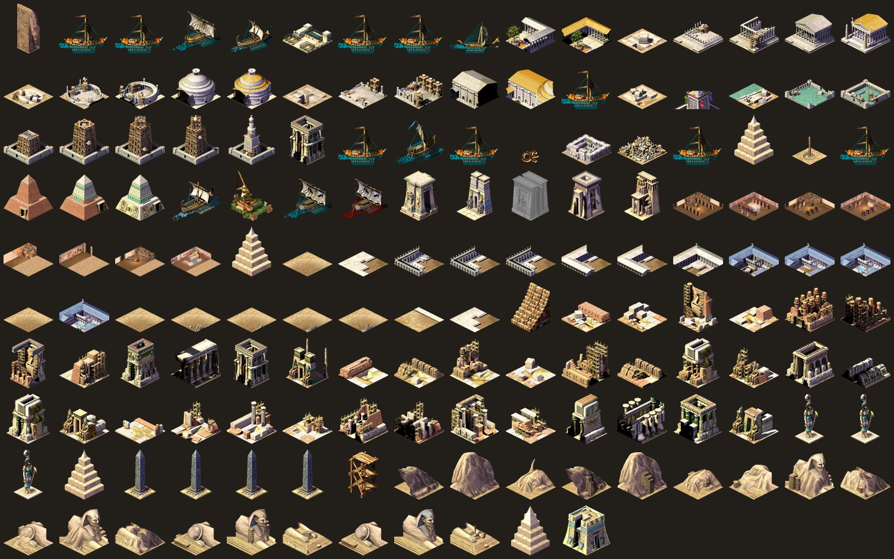
Палитра на 256 цветов
Можно похачить сам цвет, чтобы вместо нормальных цветов один байт обращался к палитре на 256 цветов, что позволит память сразу поделить пополам, и старенький Caesar II так и жил, как и многие игры того времени тоже.
Но к концу девяностых видеокарты уже нормально работали в 16-битном цвете и художники хотели плавные градиенты песка и воды, а 256 цветов на весь экран означали, что пустыня, Нил, зелень полей, кожа жителей и золото храмов будут делить одну палитру. А разные палитры, как на SNES, на PC никто в здравом уме не стал бы делать вручную, ибо дорого, некрасиво и все равно малоэффективно, поэтому Impressions перешли на 16 бит, а экономить пришлось в другом месте. Суслика видите? А он есть...
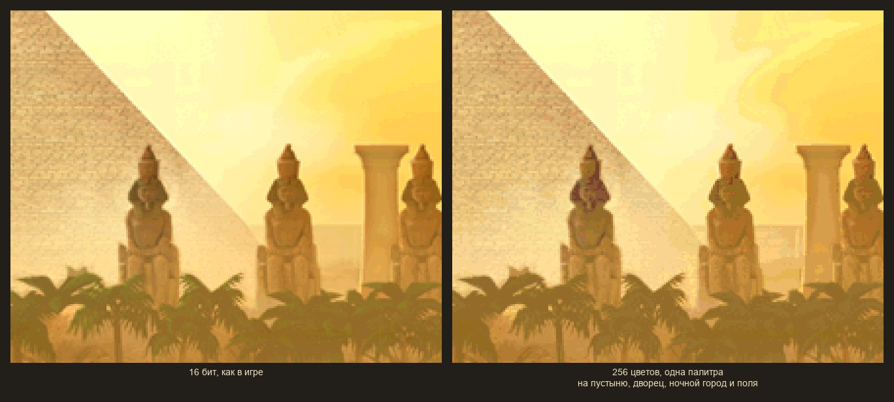
Поверхности DirectDraw
Новенький DirectDraw предлагал хранить картинки в «поверхностях», в идеале прямо в видеопамяти, и рисовать их аппаратным блиттером, что на бумаге звучало как бесплатная производительность. Но на практике у типичной видеокарты 1999 года было хорошо если 4 мегабайта памяти, из которых часть уже занята экраном и задним буфером, поверхности могли «потеряться» при переключении окон и их надо было восстанавливать, а аппаратный блиттер умел цветовой ключ, но не умел ни RLE, ни ромбы, ни раскраску шрифта в нужный цвет. Pharaoh в итоге использует DirectDraw только как способ показать готовый кадр, а все картинки рисует сам, процессором, поэтому слабые процессором компы того времени тянули игру только в 640×480 в 20 кадров.
Архивы и сжатие
Можно было бы сжать всё каким‑нибудь LZ и распаковывать при загрузке, при этом диск экономится (условно, игра все равно занимала меньше половины CD), но память так сэкономить не получится и распакованный спрайт будет занимать столько же, сколько несжатый. Поэтому сжимать имеет смысл только так, чтобы картинку можно было рисовать прямо из сжатого вида, не распаковывая её.
И последний вариант опирается на работу Windows, выделить сколько надо, а там пускай своп и разбирается, но если игре не хватало физической памяти, то страницы физически уезжали на диск и возвращались обратно, когда были нужны... что было скажем так, заметно глазом и как только сцена требует больше, чем есть, кадр превращается в шуршание жёсткого диска, а игрок узнаёт, как выглядят три кадра в секунду.
Забегая вперёд Pharaoh на этот механизм тоже опирается, только старается сделать так, чтобы холодные данные были действительно холодными.
Как это сделано в Pharaoh
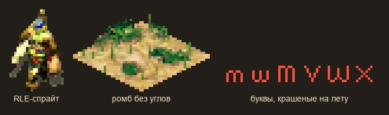
Вся графика игры лежит в папке Data парами файлов: .sg3 это индекс и .555 это пиксели и таких пар в билде набирается около двухсот, всего 395 файлов и 302Mб, из них 177 мегабайт сами пиксели, и еще 125 мегабайт индексы, но индексы, в основном пустые
Каждый .sg3 начинается с заголовка, таблицы на 300 групп, имён исходных BMP‑файлов, из которых художники собирали текстурный пак, и массива записей по 64 байта на картинку. Записей в файле всегда либо 10 000, либо 13 000, сколько бы картинок там на самом деле ни было, поэтому 158 файлов имеют размер 695 080 байт, а еще 17 файлов со спрайтами жителей и врагов по 887 080 байт. Подозреваю это было обусловлено пайплайном сборки или билдфермы, хотя когда я разговаривал с Саймоном Бредбури (лид команды разработки Цезаря и частично Фараона, а еще и Stronghold), он никакие билдфермы не упоминал и билд просто собирал по запросу один из программистов на своем ПК и выкладывал на общий диск.
typedef struct {
int32_t data; // смещение пикселей в .555
int32_t data_length;
int32_t isometric_top_offset; // где начинается верх здания
int32_t file_slot;
int32_t mirror_source_offset; // откуда брать картинку, если она зеркальная
int16_t width, height;
// ... анимация, смещения спрайта ...
uint8_t draw_type; // плоская, изометрическая, шрифт одним цветом ...
uint8_t is_compressed;
uint8_t is_external; // пиксели не в памяти, а на диске
uint8_t has_isometric_top;
// ...
uint8_t is_mirrored;
} image_header; // 64 байта, static_assert в нашем кодеТо есть сотня с лишним мегабайт на диске будут в основном нули, которые никогда не попадают в память и игра читает .sg3 во временный буфер, разбирает и сразу освобождает. Диски в 2000 году уже были большими, а вот возможности весь текстурпак поместить в память нет, хотя еще и сейчас нет, что забавно, и при наличии 8Гб видеопамяти уровни теперь весят по 20–30Гб.
А еще каждый текстурный пак, кроме реальных спрайтов текстур, начинается с одних и тех же двухсот картинок из system.bmp (рамки, кнопки, стрелки), это все наследие еще Caesar 2, который там действительно хранил данные. Видимо, было удобнее сохранить преемственностть формата. Загрузчик игры знает об этом и для всех пачек после первой он пропускает эти двести записей и начинает читать .555 со смещения 39 214 байт. Мелочь, около мегабайта экономии на всех пачках сразу, но в 2000 году мегабайт еще был мегабайтом, и биться приходилось за килобайты.
RLE, из которого можно рисовать
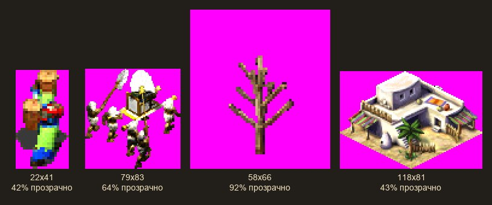
Вернемся к прозрачным пикселям (жители, животные, деревья, дым), которые хранятся в нашем спрайте. Игра кодирует такие байты через RLE, и ставит признак начала прозрачной строки 0xFF, за которым идёт число N, что означает «пропусти N прозрачных пикселей», а любой другой байт N означает «дальше идут N обычных 16-битных пикселей».
while (row_left > 0) {
uint8_t n = *src++;
if (n == 0xFF) { // прозрачный отрезок
n = *src++;
dst += n;
} else { // непрозрачный отрезок
memcpy(dst, src, n * 2);
src += n * 2;
dst += n;
}
row_left -= n;
}Главное здесь даже не степень сжатия, а что такой формат не нужно распаковывать и блиттер может рисовать прямо из него (помните что мы рисуем процессором по пикселю), прозрачные пиксели можно не трогать и просто сдвигать указатель. Тогда из 13 366 сжатых картинок, которые игра держит после старта, получается 19,85 мегабайта реальных пикселей, которые надо рисовать вместо 34Мб у сырых битмапов, то есть минус 40%.
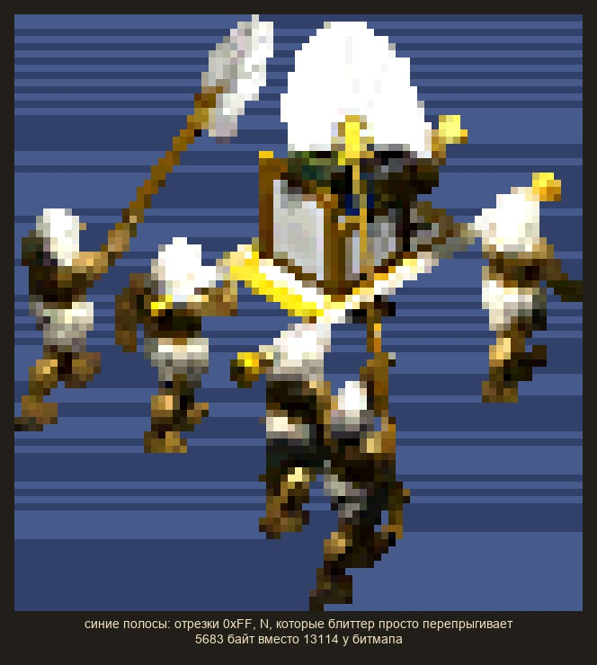
Как известно, платить приходится за всё и если спрайт обрезан сверху краем экрана, блиттер честно прокручивает все невидимые строки, чтобы найти первую видимую и начать рисовать, дальше еще интереснее...
Ромбы без углов
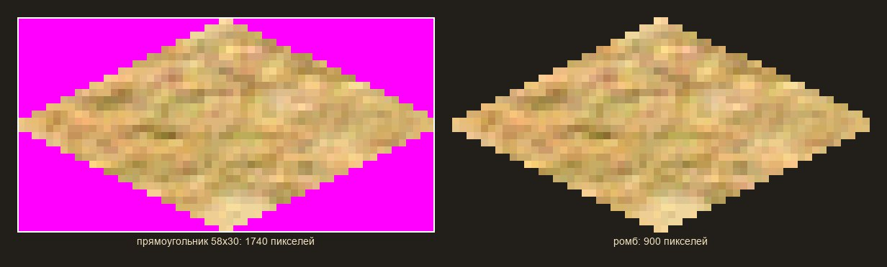
Клетка земли в изометрии выглядит для игрока как ромб 58×30 пикселей, но хранить его прямоугольником значит хранить 1740 пикселей, из которых видно меньше половины. Поэтому авторы игры начали хранить только сам ромб (строки длиной 2, 6, 10 … 58, 58 … 6, 2 пикселя, подряд), без пустых байтов, чтобы получить 900 пикселей и размер минус 50%, а учитывая, что все наши клетки карты это ромбы, то мы получаем еще половину свободной памяти.
Отсюда получается и разбивка больших зданий размером N×N, когда клетки хранятся как N² таких ромбов и рисуются диагональ за диагональю. Это ещё и упрощает отрисовку, потому что блиттеру ромба не нужен ни цветовой ключ, ни проверка на прозрачность, он просто знает длину каждой строки, он вообще не знает что там надо рисовать, вся отрисовка изометрии здания построена на математике смещений. Кто там что говорил про прозрачность?
Верх здания отдельно
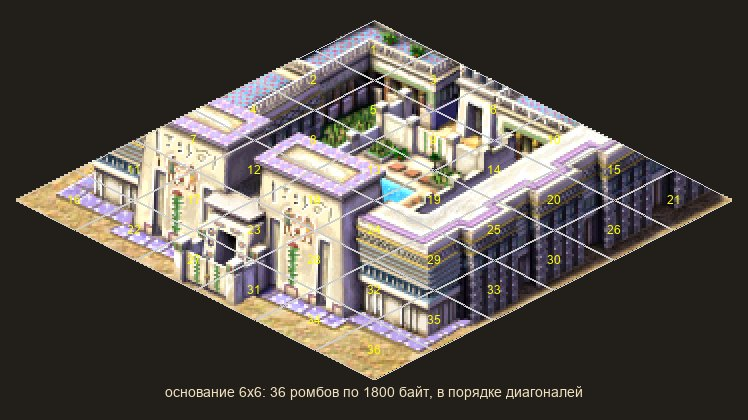
Но подходит такой способ отрисовки только для «плоских» тайлов, а нормальное здание это не только основание. У храма есть колонны, у дома есть крыша, у мастерской будет навес, и всё это торчит над ромбами, значит эту часть надо хранить отдельно, сразу после ромбов, сжатую тем же RLE, а в заголовке картинки лежит isometric_top_offset, где она начинается.
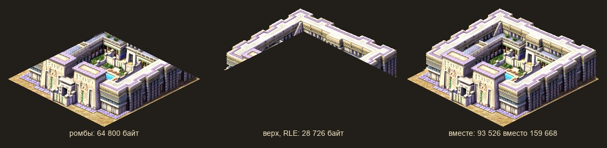
Здание 6×6 клеток размером 358×223 пикселя теперь занимает 36 ромбов по 1800 байт плюс 28 726 байт верха, итого 93 526 байт вместо 159 668. А ещё это решает проблему перекрытия без использования z‑буфера (он и сейчас то недешевый, а в двухтысячных был реальной проблемой изометрических игр). Теперь сначала игра рисует все основания на экране, потом вторым проходом, ряд за рядом, верхушки зданий, жителей и анимации и в конце ближний ряд просто рисуется позже дальнего, тогда всё оказывается на своих местах.
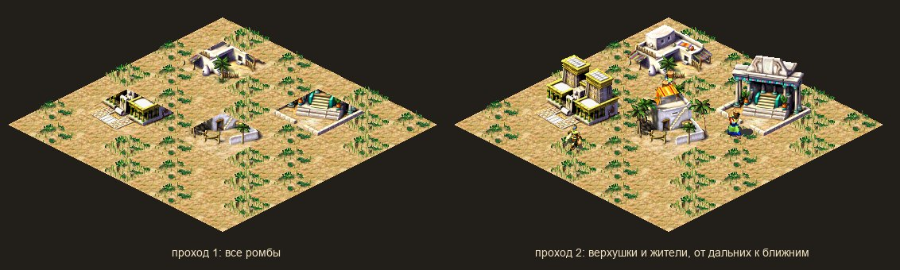
Пять направлений вместо восьми
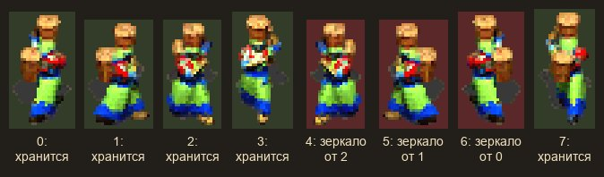
Перейдем к жителям нашего виртуальнго города, в Pharaoh они ходят в восьми направлениях, и каждый кадр анимации требует восемь отдельных текстур, но поскольку экраны были небольшие, то авторы игры прибегли к хаку и хранили только анимации пяти направлений, а направления 5, 6 и 7 были помечены флагом is_mirrored и ссылались на соседние записи со смещениями −2, −4 и −6. Т.е. блиттер рисовал их зеркально, что позволило экономить еще около 2,3 мегабайта оперативки, получается направо идти вдвое дешевле, чем налево, если подумать.
Шрифт, который красится при рисовании
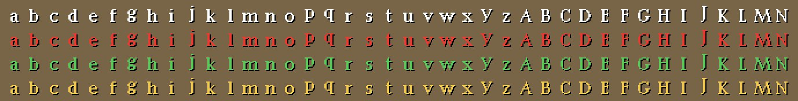
Еще остались буквы... самые обычные буквы, которые тоже надо рисовать на экране, и они тоже занимают память. Буквы это обычные картинки в пакете Pharaoh_Fonts, их там 1340 штук на 488 килобайт и часть из них имеет тип «одного цвета», это отдельная RLE‑маска без собственных цветов, которую блиттер закрашивает тем цветом, который ему передали. Один набор глифов работает и для белого текста, и для красного, и для зелёного, а тень под надписью будет та же буква, но нарисованная ещё раз чёрным со сдвигом на пиксель.
Картинки, которых нет в памяти
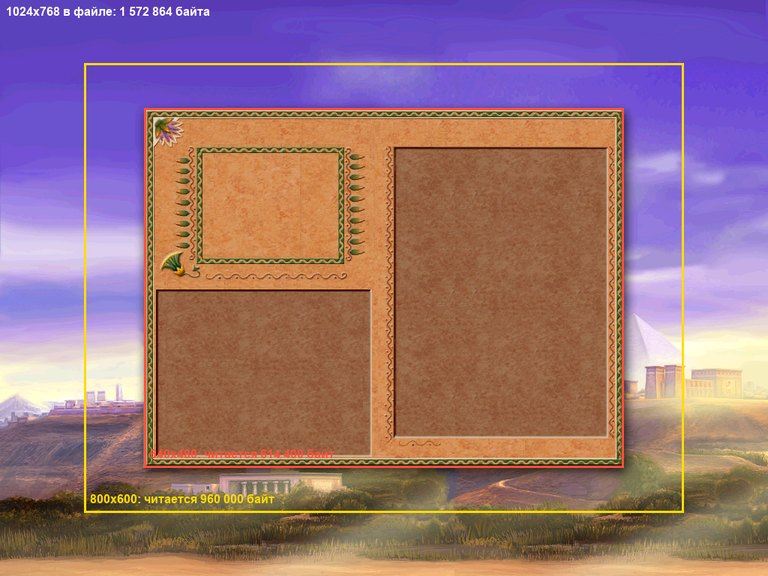
Но самый большой выигрыш в игре даёт механизм, который в коде называется «отрисовка по месту», все такие текстуры вынесены из текстурных паков в один. Это почти пустой файл, там лежат двести системных картинок на 39 килобайт и 482 текстуры, пиксели которых лежат в отдельных .555 и в память не загружаются никогда. Это большие текстуры, которые занимают почти 44Мб (полноэкранные фоны меню, картинки брифингов, портреты советников, иллюстрации обучения, рамки панелей).
А когда игре нужно нарисовать такую картинку, она открывает файл, читает этот кусок в отдельный рабочий буфер размером с экран, потом конвертирует цвет и рисует поверх основго экрана.
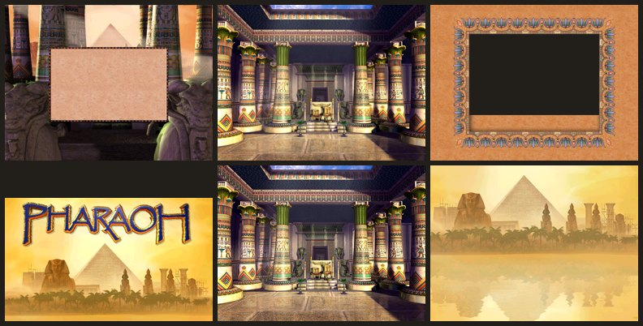
seek(fd, offset_of_first_visible_row);
for (row = 0; row < visible_height; row++) {
read(fd, buffer, visible_width * 2);
seek(fd, row_skip, SEEK_CUR); // 1024 * 2 - visible_width * 2
buffer += visible_width * 2;
}Слоты и заглушки
Осталось еще немного, вся графика в памяти разложена по тридцати слотам, которые могут адресовать отдельные текстурные паки с фиксированным диапазоном номеров картинок, то есть физически Фараон не мог держать в память более 16 к текстур. Номера картинок были жёстко зашиты в код и в сохранения, поэтому поменять содержимое слота можно, а сдвинуть номера уже нельзя.
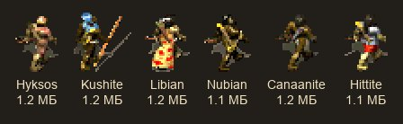
Это тоже наследие еще Caesar 2 и отказались от него только в Zeus, поэтому приходилось делать систему подгрузки, когда часть слотов была постоянная (основные спрайты, общая графика, земля, шрифты, карта империи), а остальные меняются по ситуации:
- например слот врага, была только одна из двенадцати армий, от гиксосов до персов, примерно по 1,2 мегабайта, выбирается по сценарию миссии;
- или слот храмового комплекса, один из пяти богов, когда игрок его ставит, что ограничивало возможность строить разные комплексы на одной карте.
- или слоты монументов (пирамида, мастаба, гробницы Долины царей, Абу‑Симбел, библиотека и маяк Александрии, по эпохе миссии).
- У сфинкса, маяка, библиотеки и мавзолея, когда каждая стадия строительства идет отдельным текстурным паком, который подгружается по мере стройки и подменяет предыдущий
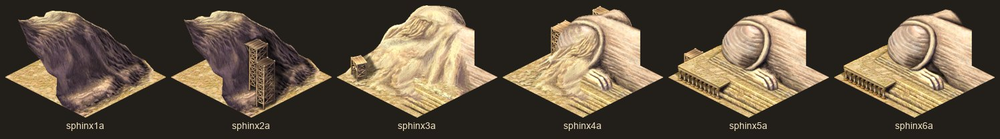
Поэтому настоящий Абу‑Симбел весит 9.4 мегабайта, но грузится он только та часть в 1.2, которая реально используеся в миссии.
int32_t image_collection_load_file(const char *name, int32_t slot)
{
if (strcmp(slots[slot].name, name) == 0) {
return 1; // уже загружено, ничего не делаем
}
free(slots[slot].pixels); // освобождаем старую пачку
load_sg3_and_555(name, slot); // номера картинок слота не меняются
return 1;
}Как раньше делали игры
Да так же как и сейчас, трюками, хаками и умолчаниями, просто масштабы изменились. В Pharaoh после старта в памяти лежит около 39 мегабайтов пикселей в тридцати слотах, плюс 3,2 мегабайта на таблицу заголовков, плюс экранные буферы. Это больше, чем 16 мегабайт, и больше, чем 32, но сильно меньше изначальных 300 мегабайт и игра честно опиралась на своп Windows, а весь описанный выше механизм нужен был для того, чтобы рабочий набор отдельного кадра (земля, спрайты жителей, текущий враг, нужная стадия монумента) помещался в физическую память, а всё остальное спокойно лежало на диске и не шуршало и не скрипело.
Без всех этих хитростей те же картинки заняли бы около 92,6 мегабайта плюс ещё 8,3 на зеркальные направления, не считая 43,8 мегабайта полноэкранных фонов, которые вообще не грузятся, и монументов, которые грузятся только в своих миссиях, поэтому разница между «влезает со свопом» и «не влезает совсем» в 2000 году примерно так и выглядела.
Вместо заключения
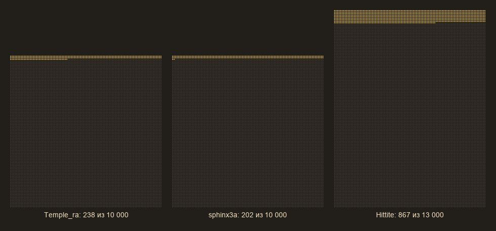
Я люблю копать старые игры, потому что они показывают как можно работать в ограничениях. Ни одна из описанных хитростей не была прорывом сама по себе и тот же RLE известен с семидесятых, а математика изометрических ромбов дак вообще с пятидесятых или даже раньше. И зеркальные спрайты были ещё на NES, и подгрузка данных по требованию это просто здравый смысл разработчика.
Но все вместе они превратили 300 мегабайт графики в рабочий набор, который помещался в память компьютера 2000 года, и сделали это без единой строчки ассемблера, просто изменив формат данных. Задача, как обычно, оказалась не в том, чтобы нарисовать быстрее, просто в нужный момент в памяти оказались нужные картинки в нужном виде.
З.Ы. Вот и закончилась история почти трех лет восстановления исходников оригинального Фараона, можете посмотреть что получилось. Бинарно и духовно совместимо с игрой из 2000 года. Велкам на it‑раскопки https://github.com/dalerank/tutankhamun
З.З.Ы. Проект пострадал от Клавдия уже на последних этапах (примерно два крайних месяца), когда надо было писать документацию, на которую у меня сильная аллергия, то есть код расковырять мне без проблем, но вот потом написать, а что там внутри творится и привести его в читаемый вид... с этим плохо... но это всегда было моей слабой стороной. А вообще он оказался отличным помощником в делах археологических, на удивление....
Все статьи